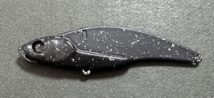

ラナケラ57-13S
（LANAKERA57-13S）
ラナケラ57-13S（LANAKERA57-13S）はTREFLE CREATION（トレフルクリエーション）の鉄板バイブレーションです。
ランカーシーバスを連発してきた人気バイブレーション「マリエラ」のコンセプトを受け継いだ、“勝利の女神が微笑む”新時代の鉄板バイブレーション。プロスタッフの大坊重哲氏が監修した、57mm・13gのコンパクトなモデルです。

画像出典:TREFLE CREATION公式HP
スペック
- メーカー
- TREFLE CREATION（トレフルクリエーション）
- タイプ
- シンキング（鉄板バイブレーション）
- 全長
- 57mm
- 自重
- 13g
- フック
- #8
- ターゲット
- シーバス
- 価格
- 1,320円（税込）
- 発売
- 2026年2月
- 監修
- 大坊 重哲
▼今すぐチェック

ラナケラ57-13Sの特徴
マリエラ譲りの“釣れる”コンセプトを、小粒な鉄板バイブに詰め込んだ1本
-
マリエラのコンセプトを受け継いだ鉄板バイブ
激戦区でランカーを連発してきたバイブレーションプラグ「マリエラ」のコンセプトを受け継いで作られた、メタル（鉄板）バイブレーション。
-
57mm・13gのコンパクトボディ
小粒なシルエットで、小型ベイトを食っている状況やスレた魚にも口を使わせやすい。13gの重さで飛距離も確保している。
-
大坊重哲氏の監修
マリエラシリーズを監修してきたプロスタッフ大坊重哲氏が監修。東京湾奥などの激戦区で鍛えられたモデル。
ラナケラ57-13Sの使い方
基本はただ巻きとリフト＆フォール。着水後にカウントダウンでレンジを決め、ただ巻きで振動を出しながら広く探ります。
ボトム付近を狙うときは、ロッドで持ち上げてフォールさせるリフト＆フォールが有効。鉄板バイブらしい強い波動で、離れた魚にもアピールできます。

画像出典:X 大坊 重哲(風来)
ラナケラ57-13Sの得意な状況
港湾・河川・干潟などのシーバスゲームで、小型ベイトを食っている状況やスレた状況が出番。
マリエラ（プラグ）では届かない深さや距離を、鉄板バイブの飛距離と沈下で攻めたいときに強い1本です。
ワンポイント
メタルバイブはフォール中にフックへ糸が絡みやすいので、着水直前にサミングしてラインを張り、フォール中もテンションを抜きすぎないのがコツです。
根掛かりが多い場所では、ボトムに着いたらすぐにリフトしましょう。
マリエラ・ラナケラの使い分け
| モデル | 全長／自重 | 得意な場面 |
|---|---|---|
| ラナケラ57-13S | 57mm／13g | 鉄板バイブ。小粒シルエットと飛距離・沈下の速さ（本記事のモデル） |
| マリエラ58S | 58mm／14g | バイブレーションプラグ。シャローやよりスローに |
| マリエラ68S | 68mm／18g | 手元にブルブル来ない“異質”なアクションのバイブレーションプラグ |
| ファットマリエラ76S | 76mm／23g | S字スラロームに特化した固定重心モデル |
ラナケラは、マリエラシリーズのコンセプトを受け継いだ鉄板バイブ。プラグのマリエラと、鉄板バイブのラナケラを状況で使い分けると攻め方の幅が広がります。
人気カラー
ラナケラ57-13Sから、シーバス狙いでオススメのカラーを厳選して紹介します。
 トレフル緑金
トレフル緑金
ベリーには黒を配した濁りが入った時にしっかりアピールするカラーです。
 マットピンク
マットピンク
東京湾周辺でかなりの釣果を上げて来たマットピンク

ギャラクシーブラック釣れない時に何故か救われるカラー。お守りにどうぞ
 ゴールドチャート
ゴールドチャート
チャートにゴールドのアクセントを足したアピール力No.1カラー
画像出典:TREFLE CREATION公式HP
ラナケラ57-13Sに似ているルアー
-
 CANNA15
ポップシークルー
詳細はこちら＞
CANNA15
ポップシークルー
詳細はこちら＞
自重15gのメタルバイブレーション。運河や河川のシャローでも使いやすいとされ、ラナケラと同じく小粒なシルエットでシーバスを狙える。
-
 鉄PANバイブ
ジャクソン
詳細はこちら＞
鉄PANバイブ
ジャクソン
詳細はこちら＞
定番のメタルバイブレーション。飛距離と強い波動でレンジを刻みながら広く探れるので、ラナケラより早く・深く探りたいときの持ち替えに。
-
 ツクモ
ジャッカル
詳細はこちら＞
ツクモ
ジャッカル
詳細はこちら＞
全長56mm・自重11.5gのバイブレーション。同じクラスのサイズで、ローテーションの1本として。